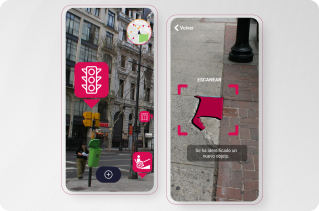
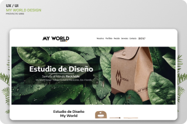

Diseño UX/UI
Proyectos
Tierra Ibérica
Rediseño de marca y sitio para Fundación Tierra Ibérica. Mejorando la interacción con el usuario y el apoyo del cliente a la fundación.


Fast App
Creación de una app que facilite la movilidad de personas con discapacidades motoras dentro de la ciudad, a través de la Realdad Aumentada.

MyWorld Design
Creación de Diseño Web y marca sobre un estudio de diseño para la materia de Diseño Multimedia I, UADE.
Zigor Samaniego
Creación del portfolio sobre artista e ilustrador 3D, Zigor Samaniego, diseñado y desarrollado en HTML, CSS, Sass, Bootstrap y Figma
Movie Theater Reservation App
Busqueda y diseño de la aplicación sobre reservación de entradas para cine para el curso de UX Google Certifcate.
Próximamente